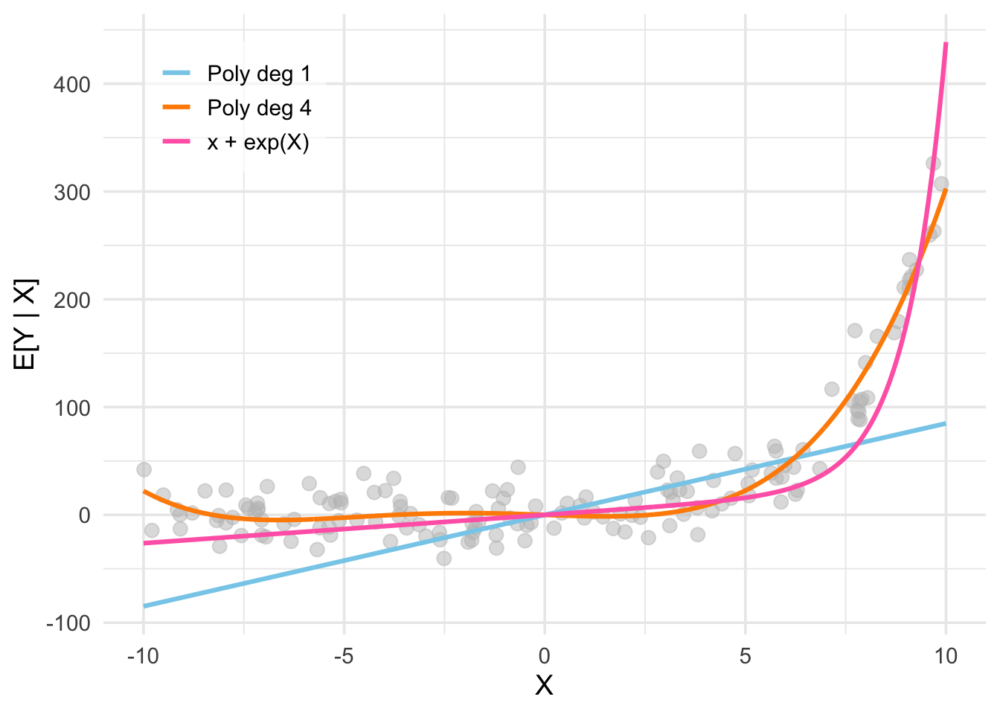

Linear Regression
Linear Regression
I motivate linear regression broadly as a way to estimate the conditional expectation function, describe the three perspectives on linear regression, and introduce the OLS estimator.
The Conditional Expectation Function
Much of modern empirical economics research can be understood as an organized attempt to answer variants of the causal question: “How does \(X\) affect \(Y\)?” For example, Eissa and Liebmann (1996) ask how taxes affect labor supply; Donaldson and Hornbeck (2016) ask how railroads affect economic growth; Angrist and Krueger (1991) ask how the education affects earnings, and so on.
Formally, we view \(X\) and \(Y\) as random variables jointly distributed according to some fixed, unknown distribution \(F\), called the data generating process (DGP).1 To study questions like the ones posed above, we are especially interested in a particular feature of the DGP: the conditional expectation function (CEF), \[ \mu(x) \equiv \mathbb{E}[Y \mid X = x]. \] The CEF summarizes the average association between \(X\) and \(Y\) implied by the DGP. Since the DGP is unknown and typically high-dimensional, the CEF is also unknown and potentially complicated.2 3
1 Also called the population.
2 High-dimensional here refers to the fact that \(X\) can be a vector of many random variables.
3 Also, since the DGP is fixed, the CEF is a deterministic function as well.
To be clear, the CEF by itself is purely a descriptive object: it captures statistical associations, not causal effects. Under additional assumptions, however, the CEF can be given a causal interpretation. For now, we defer any discussion of causality and instead focus on estimating \(\mu(x)\).4 Understanding how to estimate the CEF well is nevertheless an essential step towards answering the bigger question of causality.
Best Predictor
Motivating the CEF purely through its potential causal interpretation might be unsatisfying. As it turns out, the CEF also has a fundamental statistical property in its own right: \(\mu(x)\) is the best predictor of \(Y\) given \(X\).
There are different ways to define the notion of “best”. Here, we specifically mean that the CEF minimizes the mean squared error (MSE) function: \[ \mu(x) = \arg\min_{g(x)} \mathbb{E}[(Y - g(x))^2], \] where \(g(x)\) is any arbitrary function evaluated at \(X = x\). To see this, let’s start by defining the CEF error \[ e \equiv Y - \mu(x). \tag{1}\] By definition, we have that \(e\) is mean-independent of \(X\): \[ \begin{align} \mathbb{E}[e \mid X] &= \mathbb{E}[(Y-\mu(x)) \mid X] \\ &= \mathbb{E}[Y \mid X] - \mathbb{E}[\,\mu(x) \mid X] \\ &= \mu(x) - \mu(x) = 0. \end{align} \tag{2}\]
It immediately follows that \(e\) has mean-zero \[ \mathbb{E}[e] = \mathbb{E}[\mathbb{E}[e \mid X]] = 0, \tag{3}\] is orthogonal with any function of \(X\) \[ \begin{align} \mathbb{E}[h(X)e] &= \mathbb{E} [\mathbb{E}[h(X) \, e\mid X]] \\ &= \mathbb{E}[h(X)\, \mathbb{E}[e \mid X]] = 0, \end{align} \tag{4}\] and is uncorrelated with any function of \(X\) \[ \operatorname{Cov}(e,h(X))=\mathbb{E}\,[h(X)\, e] - \mathbb{E}[h(X)]\mathbb{E}[e] = 0. \tag{5}\]
Now, consider the MSE of any arbitrary predictor \(g(x)\):
\[ \begin{align} \mathbb{E}[(Y - g(x))^2] &= \mathbb{E}[(e + \mu(x) - g(x))^2] \\ &= \mathbb{E}[e^2] + 2\,\mathbb{E}[(\mu(x) - g(x))\, e] + \mathbb{E}[(\mu(x) - g(x))^2] \\ &=\mathbb{E}[e^2] + \mathbb{E}[(\mu(x) - g(x))^2] \\ &\geq \mathbb{E}[e^2] \\ &= \mathbb{E}[(Y - \mu(x))^2]. \end{align} \] Thus, the MSE for any predictor \(g(x)\) is at least as large as that for the CEF \(\mu(x)\), proving that the CEF is indeed the best predictor of \(Y\) given \(X\) (in the MSE sense).
The Curse of Dimensionality
Let’s return to the problem of estimating the CEF, wherein we want to make a good guess of \(\mu(x)\) using the finite random sample \(\{X_i,Y_i\}_{i=1}^n\) drawn from the DGP \(F\). Recall that a natural method of estimation is the plug-in principle, where we construct the estimator by replacing population quantities with their sample analogues. In this case, the plug-in estimator is the sample conditional mean \[ B(x) = \frac{\sum_{i=1}^n Y_i \, \mathbf{1}(X_i=x)}{\sum_{i=1}^n \mathbf{1}(X_i=x)}. \] We refer to \(B(x)\) as the binning estimator because it groups (“bins”) the sample by the values of \(X_i\) and takes the simple average of \(Y_i\) within each bin. The binning estimator is random since it is a function of the random sample.5 When evaluated for a specific realized sample — that is, for the data \(\{x_i,y_i\}_{i=1}^n\) that we actually observe — the binning estimate is the fixed scalar \[ {b}(x) = \frac{\sum_{i=1}^n y_i \, \mathbf{1}(x_i=x)}{\sum_{i=1}^n \mathbf{1}(x_i=x)}. \]
5 A different draw from \(F\) could have resulted in a different realization of \(X_i\).
6 The notation here implicitly assumes \(X_i\) is discrete. To extend it to the continuous case, we would simply replace the equality with a set membership condition.
The binning estimator suffers from what is called the curse of dimensionality: as the dimension of \(X_i\) increases, the effective sample size of each bin \[ \begin{align} \mathbb{E}\left[\sum_{i=1}^n \boldsymbol 1 (X_i = x)\right] &\equiv n \times \mathbb{P}(X_i=x) \\ &= n \prod_{j=1}^d \mathbb{P}(X_{ij} = x_j) \end{align} \] decreases.6 As a result, most bins contain very few — or even zero — observations, making the binning estimator very noisy or undefined. To illustrate this idea, consider the following simulation. Draw a random sample of size \(n=2000\) from the following DGP: \[ \begin{align} X_i &\overset{iid}{\sim} (Bernoulli(0.5))^K, \quad i=1,\ldots,n, \\ \\ Y_i = \mu(x) &+ e_i, \quad \mu(x) = \sum_{j=1}^K (X_{ij} = x_j), \quad e_i \overset{iid}{\sim} N(0,1). \end{align} \] To assess the performance of the binning estimator as the dimension \(K\) of \(X_i\) increases, we can examine the empirical bias and variance of \(B(x)\) evaluated at the bin \(x=(1,1,\ldots,1)\) across \(10000\) repeated samples.
As the figure above shows, the binned estimator remains unbiased regardless of the dimension \(K\), but its variance increases exponentially with \(K\). This occurs because the probability of being in the bin, \(\mathbb{P}(X_i = x)\), decreases exponentially towards \(0\) as \(K\) increases, causing the effective sample size used to compute \(b(x)\) to shrink rapidly. Thus, the more variables we condition on, the less data we have to estimate each conditional mean, regardless of how large the overall sample size is.
The curse of dimensionality arises because \(B(x)\) requires observing the specific value \(X_i = x\) to say anything about \(\mu(x)\). A natural solution, then, is to relax this requirement and use \(X_i \neq x\) to inform our estimate of \(\mu(x)\). Non-parametric approaches consider “near-by” values of \(X_i\) to \(x\), and use a weighted average of the corresponding \(Y_i\) to estimate \(\mu(x)\). Parametric approaches instead impose a functional form on \(\mu(x)\) and use all values of \(X_i\) to estimate \(\mu(x)\). In what follows, we focus on the simplest and most widely used parametric specification — one where \(\mu(x)\) is a linear function of \(x\).
Linear Regression: As a Statistical Model
We are interested in estimating the CEF \(\mu(x)\). Recall that performing point estimation within a statistical model — that is, a set of assumptions about the DGP — is often more informative than proceeding with no assumptions at all, because it allows us to characterize the sampling distribution of the estimator.7 In this section, we will develop the linear regression model: a statistical model that assumes \(\mu(x)\) is a linear function of \(x\) and results in an estimator with appealing asymptotic properties.
7 Of course, working within a model is “more informative” only if the model is a good approximation of reality.
Before proceeding, it’s useful to clarify the notation we will use going forward. For unit \(i\) in the random sample, the regressand \(Y_i\) denotes the outcome of interest and the vector of regressors \(X_i \equiv [X_{i1}, \ldots, X_{iK}]'\) denotes the set of variables that we condition on. The corresponding realizations of the random sample is denoted by the scalar \(y_i\) and vector \(x_i \equiv [x_{i1}, \ldots, x_{iK}]'\). The vector \(x \equiv [x_1, \ldots, x_K]'\) denotes the specific regressor values at which we want to evaluate the CEF \(\mu(x) \equiv \mathbb{E}[Y_i \mid X_i = x]\).
Defining the Model
At its core, the linear regression model consists of the following two assumptions.8 9 10
8 I say “core” because I omit (i) technical assumptions needed to ensure the estimator of the model parameters are well-defined, and (ii) additional “classical” assumptions about the error term that are needed to derive finite-sample properties of the estimator. These assumptions are introduced later in the post as necessary.
9 Older econometrics textbooks typically impose the “strict exogeneity” assumption, where we condition on \(X_1, \ldots, X_n\) instead of only \(X_i\). However, under iid sampling, conditioning on \(X_i\) implies the stricter condition because of independence.
10 Technically, the linear regression model should be introduced without the \(i\) subscripts, since the assumptions are about the DGP. However, under iid sampling, the assumptions must hold for each unit \(i\) as well. Moreover, the unit-level notation will be useful when deriving the estimator of the coefficients.
Assumption 1. The Linear Regression Model
(A) (Linearity) The regressand \(Y_i\) is a linear combination of the regressors \(X_{i1}, \ldots, X_{iK}\), plus some random variable \(e_i\) called the error: \[ Y_i = \beta_1X_{i1} + \ldots + \beta_KX_{iK} + e_i \quad \forall \, i = 1, \ldots, n. \tag{6}\]
(B) (Exogeneity) The error \(e_i\) has a conditional mean of zero given the regressors of all observations: \[ \mathbb{E}[e_i \mid X_i] = 0 \quad \forall \, i = 1, \ldots, n. \tag{7}\]
Taken together, assumptions (A) and (B) imply that the CEF is a linear function of \(x\): \[ \begin{align} \mu(x) &= \mathbb{E}[\beta_1X_{i1} + \ldots + \beta_KX_{iK} + e_i \mid X_i = x] \\ &= \beta_1 x_1 + \ldots + \beta_K x_K + \mathbb{E}[e_i \mid X_i = x] \\ &= \beta_1 x_1 + \ldots + \beta_K x_K. \end{align} \tag{8}\]
The assumption of exogeneity ensures that the properties of the CEF error \(e\) previously discussed (see Equation 3, Equation 4, Equation 5) also hold for the linear regression error \(e_i\). Specifically, \(e_i\) has mean-zero and is orthogonal and uncorrelated to any function of \(X_i\). The proof is omitted because it is the same as before.
Interpreting the Assumptions
It’s worth spending a moment to understand what exactly is (and is not) being assumed in the linear regression model.
Solving for the (Population) Coefficients
Matrix Notation
For notational compactness, it is useful to recast the model in matrix notation. First note that we can stack Equation 6 as a system of \(n\) equations
\[ \begin{aligned} Y_1 &= \beta_1 X_{11} + \ldots + \beta_k X_{1K} + e_1 = {X}_1'{\beta} + e_1\\\ Y_2 &= \beta_1 X_{21}+ \ldots + \beta_k X_{2K} + e_2 = {X}_2'{\beta} + e_2 \\ &\;\;\vdots \\ Y_n &= \beta_1X_{n1} + \ldots + \beta_k X_{nK} + e_n= {X}_n'{\beta} + e_n, \end{aligned} \] where \(\beta \equiv [\beta_1, \ldots, \beta_K]'\) denotes the vector of coefficients.
Now, we can collapse this system of equations into a single matrix equation \[ {Y} = \mathbf{X}\beta + e, \tag{9}\] where the \(n \times K\) design matrix (or data matrix) stacks the regressors \(X_i'\) of all units: \[ \mathbf{X} = \begin{bmatrix} {X}_1' \\ \vdots \\ {X}_n' \end{bmatrix} = \begin{bmatrix} X_{11} & \ldots & X_{1K} \\ \vdots & \ddots & \vdots \\ X_{n1} & \ldots & X_{nK} \end{bmatrix}. \]